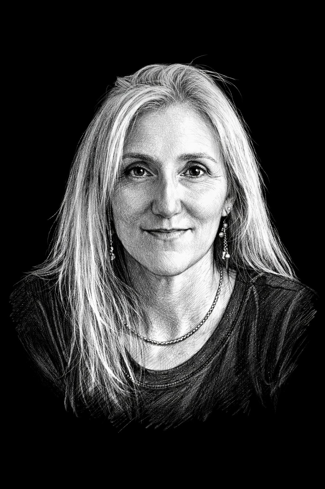
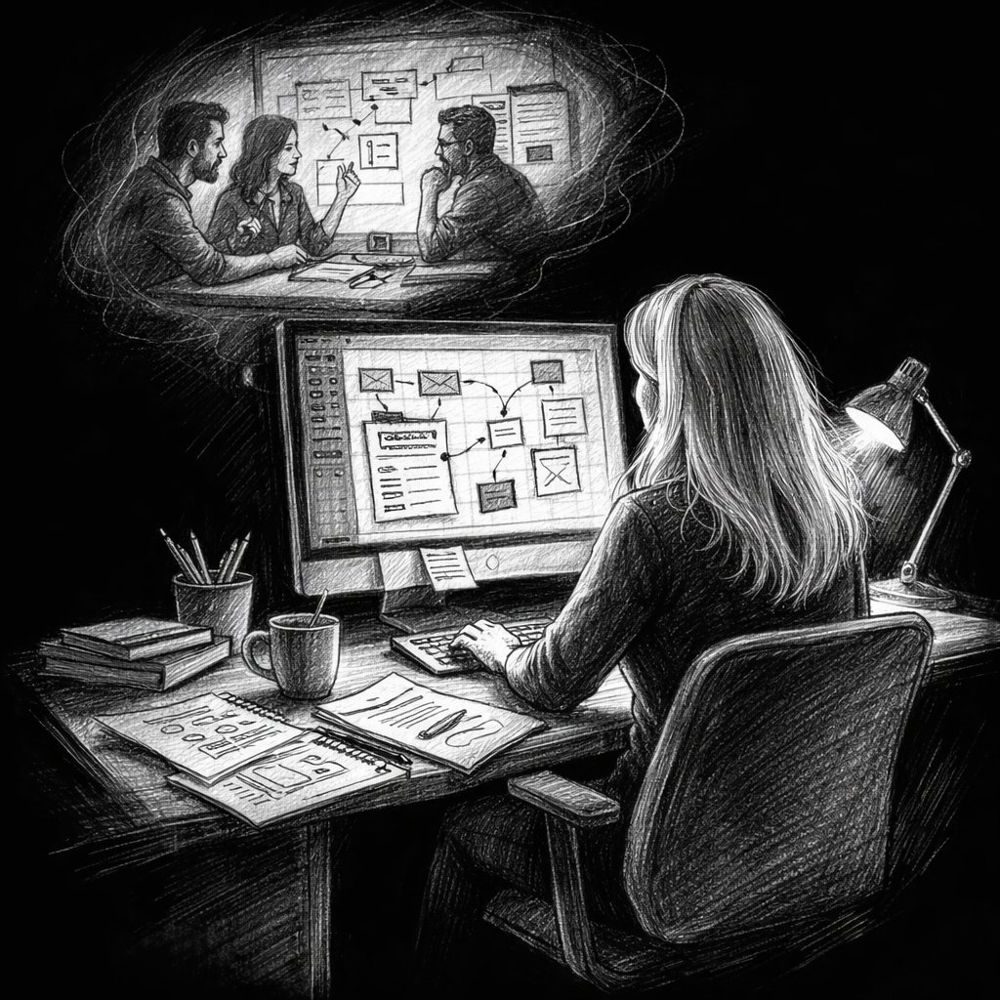
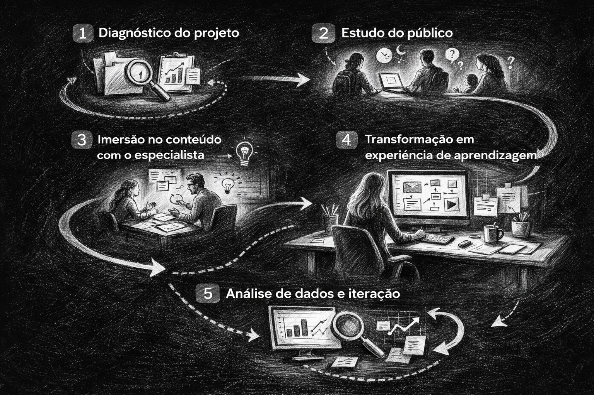

Designer Instrucional Sênior
Disciplinas, objetos de aprendizagem, séries documentais, software educacional. Seis anos projetando educação a distância que funcione para quem precisa dela.
Ver projetos

Existe um trabalho que acontece antes de qualquer aula começar. Antes do vídeo ser gravado, antes da tela carregar, antes do aluno clicar. É o trabalho de decidir o que ensinar, em que ordem, para quem, e o que deixar de fora. Faço esse trabalho há seis anos.
Sou designer instrucional sênior. Desenvolvo projetos para a UNIVESP, a USP e a Escola da Inclusão da Secretaria dos Direitos da Pessoa com Deficiência do Estado de São Paulo. Disciplinas, REAs, objetos de aprendizagem, séries documentais, software educacional. Em cada um desses contextos, o problema muda. A escala muda. O público muda. O que não muda é o compromisso com material que funciona para quem precisa dele.
Minha especialização é a educação a distância. Meu trabalho é fazer com que ela não seja. Tori (2022) chamou de educação sem distância: quando tecnologia e design estão bem resolvidos, a separação entre quem ensina e quem aprende desaparece. Essa é a premissa que orienta tudo o que projeto.
Trabalho com as ferramentas que cada projeto exige: de H5P a roteiros audiovisuais, de especificação de games educacionais a interfaces pedagógicas acessíveis. O que decide é o julgamento. O que executa é a ferramenta.
Cada projeto foi escolhido porque demonstra algo que os outros não demonstram. Lidos em conjunto, constroem um argumento sobre o que é possível quando design instrucional é tratado como campo de pesquisa aplicada.
Jogo investigativo com dois pilotos documentados. Análise de 1.749 estudantes por Taxonomia de Bloom. Ecossistema fictício com consistência ecológica real, construído por curadoria científica. Sistema de Learning Analytics via xAPI.
Dez inovações simultâneas, personagem Marina, avaliação com 707 respondentes. Mediana 5 em satisfação. Reflexão crítica documentada.
Design instrucional de software gamificado para crianças com DV. Fundamentado em neuroplasticidade, Vygotsky, Piaget e Teoria do Flow. Metodologia DSR.
Publicado na SEDPcD. Cinco capítulos narrativos e onze vídeos acessíveis. Storytelling para famílias da rede pública. Especialista: Dra. Francine Boldan.
Guia web publicado e quatro vídeos. Libras, audiodescrição, closed caption, aro magnético, piso tátil, Braille. Roteiro e produção completa.
Série de vídeos educativos sobre práticas inclusivas. Roteiro, produção e coordenação de conteúdo especializado em acessibilidade e educação especial para profissionais da rede pública.
O bom design instrucional é aquele que ninguém percebe. O aprendiz sente que entendeu. Não vê a estrutura que tornou isso possível.

O design instrucional que funciona começa antes da tela e continua depois da aula.